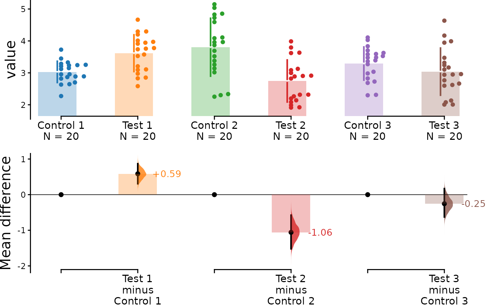

When scientists conduct replicates of the same experiment, the effect
size of each replicate often varies, which can make interpreting the
results more challenging. This vignette documents how
dabestr is able to compute the meta-analyzed weighted
effect size given multiple replicates of the same experiment. This
feature can help resolve differences between replicates and simplify
interpretation.
This function uses the generic inverse-variance method to calculate the effect size, as follows:
where:
Note that dabestr uses the fixed-effects model of
meta-analysis, as opposed to the random-effects model. This means that
all variation between the results of each replicate is assumed to be due
solely to sampling error. We recommend using this function only for
replications of the same experiment, where it can be safely assumed that
each replicate estimates the same population mean,
.
The dabestr package can only compute weighted effect
size for mean difference only, and not standardized measures
such as Cohen’s d.
For more information on meta-analysis, please refer to Chapter 10 of the Cochrane handbook:
Create dataset for demo
set.seed(12345) # Fix the seed so the results are reproducible.
# pop_size = 10000 # Size of each population.
N <- 20 # The number of samples taken from each population
# Create samples
c1 <- rnorm(N, mean = 3, sd = 0.4)
c2 <- rnorm(N, mean = 3.5, sd = 0.75)
c3 <- rnorm(N, mean = 3.25, sd = 0.4)
t1 <- rnorm(N, mean = 3.5, sd = 0.5)
t2 <- rnorm(N, mean = 2.5, sd = 0.6)
t3 <- rnorm(N, mean = 3, sd = 0.75)
# Add a `gender` column for coloring the data.
gender <- c(rep("Male", N / 2), rep("Female", N / 2))
# Add an `id` column for paired data plotting.
id <- 1:N
# Combine samples and gender into a DataFrame.
df <- tibble::tibble(
`Control 1` = c1, `Control 2` = c2, `Control 3` = c3,
`Test 1` = t1, `Test 2` = t2, `Test 3` = t3,
Gender = gender, ID = id
)
df <- df %>%
tidyr::gather(key = Group, value = Measurement, -ID, -Gender)We now have 3 Control groups and 3 Test groups, simulating 3 replicates of the same experiment. Our dataset also includes a non-numerical column indicating gender and another column indicating the identity of each observation.
This is known as a ‘long’ dataset. See this writeup for more details.
| Gender | ID | Group | Measurement |
|---|---|---|---|
| Male | 1 | Control 1 | 3.234211 |
| Male | 2 | Control 1 | 3.283786 |
| Male | 3 | Control 1 | 2.956279 |
| Male | 4 | Control 1 | 2.818601 |
| Male | 5 | Control 1 | 3.242355 |
| Male | 6 | Control 1 | 2.272818 |
Loading Data
Next, we load data as we would typically do using
load(). This time, however, we also specify the argument
minimeta = TRUE. As we are loading three experiments’ worth
of data, idx is passed as a list of vectors, as shown
below:
unpaired <- load(df,
x = Group, y = Measurement,
idx = list(
c("Control 1", "Test 1"),
c("Control 2", "Test 2"),
c("Control 3", "Test 3")
),
minimeta = TRUE
)When this dabest object is printed, it should show that
effect sizes will be calculated for each group, as well as the weighted
delta. Note once again that the weighted delta will only be calculated
for the mean difference.
print(unpaired)
#> DABESTR v2025.3.14
#> ==================
#>
#> Good morning!
#> The current time is 09:52 AM on Thursday May 08, 2025.
#>
#> ffect size(s) with 95% confidence intervals will be computed for:
#> 1. Test 1 minus Control 1
#> 2. Test 2 minus Control 2
#> 3. Test 3 minus Control 3
#> 4. weighted delta (only for mean difference)
#>
#> 5000 resamples will be used to generate the effect size bootstraps.After applying the mean_diff() function to the
dabest object, you can view the mean differences for each
group as well as the weighted delta by printing the
dabest_effectsize_obj.
unpaired.mean_diff <- mean_diff(unpaired)
print(unpaired.mean_diff)
#> DABESTR v2025.3.14
#> ==================
#>
#> Good morning!
#> The current time is 09:52 AM on Thursday May 08, 2025.
#>
#> The character(0) mean difference between Test 1 and Control 1 is 0.585 [95%CI 0.307, 0.869].
#> The p-value of the two-sided permutation t-test is 0.0004, calculated for legacy purposes only.
#>
#> The character(0) mean difference between Test 2 and Control 2 is -1.058 [95%CI -1.52, -0.577].
#> The p-value of the two-sided permutation t-test is 0.0002, calculated for legacy purposes only.
#>
#> The character(0) mean difference between Test 3 and Control 3 is -0.254 [95%CI -0.626, 0.169].
#> The p-value of the two-sided permutation t-test is 0.2167, calculated for legacy purposes only.
#>
#> 5000 bootstrap samples were taken; the confidence interval is bias-corrected and accelerated.
#> Any p-value reported is the probability of observing the effect size (or greater),
#> assuming the null hypothesis of zero difference is true.
#> For each p-value, 5000 reshuffles of the control and test labels were performed.You can view the details of each experiment by accessing
dabest_effectsize_obj$boot_results, as shown below. This
also contains details of the weighted delta.
unpaired.mean_diff$boot_result
#> # A tibble: 4 × 11
#> control_group test_group bootstraps nboots bca_ci_low bca_ci_high pct_ci_low
#> <chr> <chr> <list> <int> <dbl> <dbl> <dbl>
#> 1 Control 1 Test 1 <dbl> 5000 0.307 0.869 0.302
#> 2 Control 2 Test 2 <dbl> 5000 -1.52 -0.577 -1.52
#> 3 Control 3 Test 3 <dbl> 5000 -0.626 0.169 -0.645
#> 4 Minimeta Overa… Minimeta … <dbl> 5000 -0.186 0.238 0.0355
#> # ℹ 4 more variables: pct_ci_high <dbl>, ci <dbl>, difference <dbl>,
#> # weight <dbl>Unpaired Data
Simply calling the dabest_plot() function it will
generate a Cumming estimation plot showing the data for
each experimental replicate as well as the calculated weighted
delta.
dabest_plot(unpaired.mean_diff)You can also hide the weighted delta by passing the argument
show_mini_meta = FALSE. In this case, the resulting graph
would be identical to a multiple two-groups plot:
dabest_plot(unpaired.mean_diff, show_mini_meta = FALSE)
Paired Data
The tutorial up to this point has dealt with unpaired data. If your
data is paired data, the process for loading, plotting and accessing the
data is the same as for unpaired data, except that you need to pass the
argument paired = "sequential" or
paired = "baseline" and an appropriate id_col
during the load() step, as follows:
paired.mean_diff <- load(df,
x = Group, y = Measurement,
idx = list(
c("Control 1", "Test 1"),
c("Control 2", "Test 2"),
c("Control 3", "Test 3")
),
paired = "baseline", id_col = ID,
minimeta = TRUE
) %>%
mean_diff()
dabest_plot(paired.mean_diff, raw_marker_size = 0.5, raw_marker_alpha = 0.3)